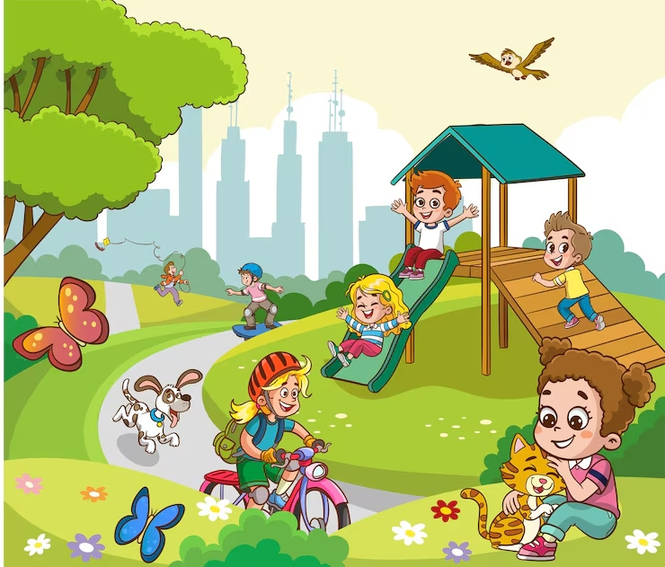
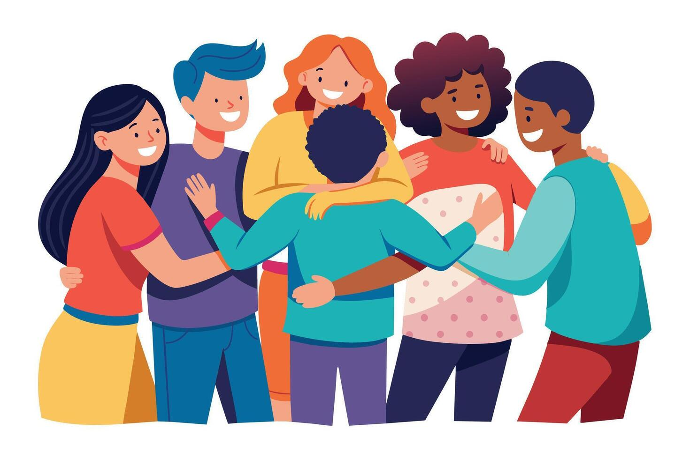

Present Continuous
When we use the Present Continuous
-
We use the present continuous to talk about actions happening right now, at the moment of speaking:
- I am studying English right now.

- They are playing in the park.

-
We use the Present Continuous to talk about temporary situations or actions:
- She is staying with her friends this week.

- He is working on a new project this month.
Structure
REMEMBER: We use the auxiliary verbs AM, IS or ARE + the main verb ending in -ING

Practicing What I've Learned
Practicing What I've Learned: responde las preguntas aquí mismo y revisa tu puntaje.
In this link you can find exercises about the Present Continuous: Present Continuous Exercises